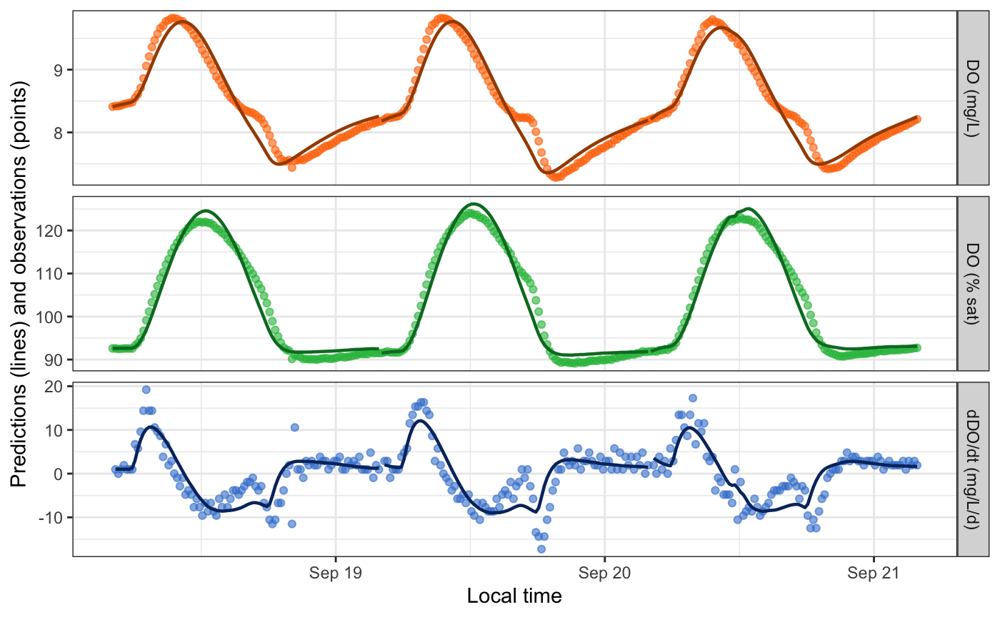
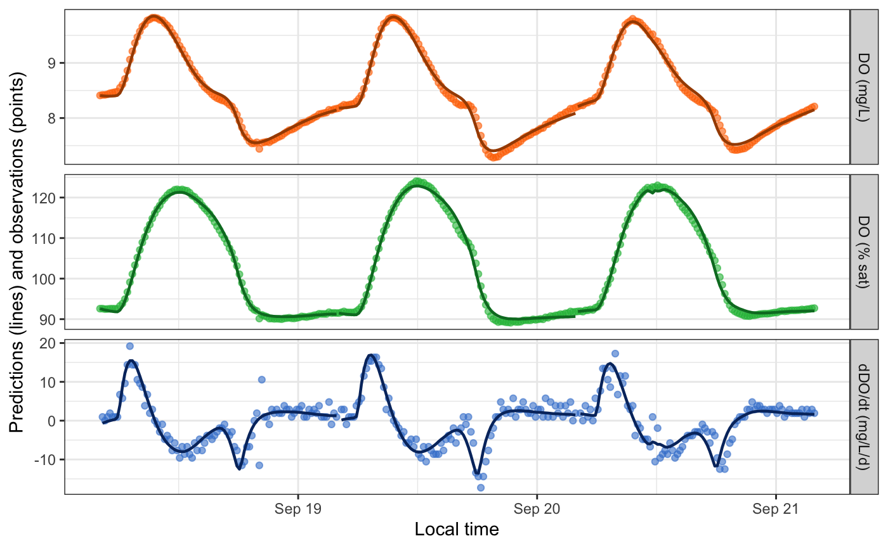

Overview
This vignette demonstrates a few of the options for relating GPP and ER to light and/or temperature.
Setup
Load streamMetabolizer and dplyr.
Get some data to work with: here we’re requesting three days of data at 15-minute resolution. Thanks to Bob Hall for the test data.
dat <- data_metab('3', '15')GPP and ER functions
Here’s a basic model with GPP proportional to light and ER constant over time.
# the Classic: linear GPP, constant ER (also the default)
mm_classic <-
mm_name('mle', GPP_fun='linlight', ER_fun='constant') %>%
specs() %>%
metab(dat)
mm_classic## metab_model of type metab_mle
## streamMetabolizer version 0.12.1
## Specifications:
## model_name m_np_oi_tr_plrckm.nlm
## day_start 4
## day_end 28
## day_tests full_day, even_timesteps, complete_data, pos_discharge, pos_depth
## required_timestep NA
## init.GPP.daily 8
## init.ER.daily -10
## init.K600.daily 10
## Fitting time: 1.565 secs elapsed
## Parameters (3 dates):
## date GPP.daily GPP.daily.lower GPP.daily.upper ER.daily ER.daily.lower ER.daily.upper
## 1 2012-09-18 2.814873 2.158410 3.471335 -2.113937 -2.647969 -1.579906
## 2 2012-09-19 3.271209 2.561176 3.981243 -2.466198 -3.052360 -1.880037
## 3 2012-09-20 2.590927 2.119941 3.061914 -1.712055 -2.070765 -1.353344
## K600.daily K600.daily.lower K600.daily.upper msgs.fit
## 1 31.06049 24.47002 37.65096
## 2 33.23838 26.62470 39.85206
## 3 28.71846 24.00835 33.42857
## Predictions (3 dates):
## date GPP GPP.lower GPP.upper ER ER.lower ER.upper msgs.fit msgs.pred
## 1 2012-09-18 2.814873 2.158410 3.471335 -2.113937 -2.647969 -1.579906
## 2 2012-09-19 3.271209 2.561176 3.981243 -2.466198 -3.052360 -1.880037
## 3 2012-09-20 2.590927 2.119941 3.061914 -1.712055 -2.070765 -1.353344Here’s one where GPP is a saturating function of light. ER is still constant.
# the Saturator: GPP saturating with light, constant ER
mm_saturator <-
mm_name('mle', GPP_fun='satlight', ER_fun='constant') %>%
specs() %>%
metab(dat)
mm_saturator## metab_model of type metab_mle
## streamMetabolizer version 0.12.1
## Specifications:
## model_name m_np_oi_tr_psrckm.nlm
## day_start 4
## day_end 28
## day_tests full_day, even_timesteps, complete_data, pos_discharge, pos_depth
## required_timestep NA
## init.Pmax 10
## init.alpha 1e-04
## init.ER.daily -10
## init.K600.daily 10
## Fitting time: 2.39 secs elapsed
## Parameters (3 dates):
## date Pmax Pmax.lower Pmax.upper alpha alpha.lower alpha.upper ER.daily
## 1 2012-09-18 6.033048 5.715948 6.350149 0.0083268769 0.0078854764 0.0087682775 -1.93445254
## 2 2012-09-19 10.592112 -16.037273 37.221497 0.0006762431 0.0004207099 0.0009317763 -0.05326281
## 3 2012-09-20 -6.226684 -6.703563 -5.749805 0.0073752923 0.0068232607 0.0079273238 -1.67304539
## ER.daily.lower ER.daily.upper K600.daily K600.daily.lower K600.daily.upper msgs.fit
## 1 -2.0254532 -1.84345184 24.57065 23.556079 25.58523 W
## 2 -0.1539228 0.04739719 12.91624 9.359051 16.47342 W
## 3 -1.7893875 -1.55670326 24.40066 23.013037 25.78829
## Fitting warnings:
## 1 date: iteration limit exceeded
## 1 date: last global step failed to locate a point lower than estimate. Either estimate is an approximate local minimum of the function or steptol is too small
## Predictions (3 dates):
## date GPP GPP.lower GPP.upper ER ER.lower ER.upper msgs.fit msgs.pred
## 1 2012-09-18 2.4687694 NA NA -1.93445254 -2.0254532 -1.84345184 W
## 2 2012-09-19 0.3838757 NA NA -0.05326281 -0.1539228 0.04739719 W
## 3 2012-09-20 2.4077931 NA NA -1.67304539 -1.7893875 -1.55670326The Saturator produces fitting warnings, which are condensed to ‘w’ and a summary in the above print-out. They can be inspected in detail by looking directly at the fitted daily parameters:
get_params(mm_saturator) %>% select(date, warnings, errors)## date
## 1 2012-09-18
## 2 2012-09-19
## 3 2012-09-20
## warnings
## 1 last global step failed to locate a point lower than estimate. Either estimate is an approximate local minimum of the function or steptol is too small
## 2 iteration limit exceeded
## 3
## errors
## 1
## 2
## 3Similary, you can inspect the warnings and errors that arise during prediction by pulling out the daily metabolism predictions (but there aren’t any, so those columns are empty):
predict_metab(mm_saturator) %>% select(date, warnings, errors)## date warnings errors
## 1 2012-09-18
## 2 2012-09-19
## 3 2012-09-20You can predict and/or plot instantaneous DO values from the fitted daily parameters.
predict_DO(mm_saturator) %>% head## date solar.time DO.obs DO.sat depth temp.water light DO.mod
## 1 2012-09-18 2012-09-18 04:05:58 8.41 9.083329 0.16 3.60 0 8.410000
## 2 2012-09-18 2012-09-18 04:20:58 8.42 9.093063 0.16 3.56 0 8.403197
## 3 2012-09-18 2012-09-18 04:35:58 8.42 9.105254 0.16 3.51 0 8.399110
## 4 2012-09-18 2012-09-18 04:50:58 8.43 9.112582 0.16 3.48 0 8.397120
## 5 2012-09-18 2012-09-18 05:05:58 8.45 9.127267 0.16 3.42 0 8.397068
## 6 2012-09-18 2012-09-18 05:20:58 8.46 9.137079 0.16 3.38 0 8.398825
plot_DO_preds(mm_saturator)
Yep, that fitting warning on day 2 was meaningful! We can encourage the model toward a good fit by adjusting the initial values of Pmax and alpha from which the fitting function should explore likelihood space. There are two ways to do this - as date-specific values in data_daily, or as values that apply to every date in specs(). The two methods can even be combined.
mm_saturator2 <-
mm_name('mle', GPP_fun='satlight', ER_fun='constant') %>%
specs() %>%
metab(dat, data_daily=select(get_params(mm_saturator), date, init.Pmax=Pmax, init.alpha=alpha))
get_params(mm_saturator2)## date Pmax Pmax.sd alpha alpha.sd ER.daily ER.daily.sd K600.daily
## 1 2012-09-18 6.033048 0.1614450 0.008326878 0.0002252293 -1.934453 0.04636854 24.57065
## 2 2012-09-19 7.269965 0.2810085 0.009041367 0.0003329973 -2.239061 0.07721965 26.60997
## 3 2012-09-20 -6.226684 0.2437185 0.007375292 0.0002816281 -1.673045 0.05940581 24.40066
## K600.daily.sd warnings errors
## 1 0.5166937
## 2 0.7961571
## 3 0.7089138
mm_saturator3 <-
mm_name('mle', GPP_fun='satlight', ER_fun='constant') %>%
specs(init.Pmax=6.2, init.alpha=0.008) %>%
metab(dat)
get_params(mm_saturator3)## date Pmax Pmax.sd alpha alpha.sd ER.daily ER.daily.sd K600.daily
## 1 2012-09-18 6.033048 0.1614592 0.008326878 0.0002252284 -1.934452 0.04637106 24.57065
## 2 2012-09-19 7.270001 0.2806163 0.009041332 0.0003330178 -2.239060 0.07715527 26.61006
## 3 2012-09-20 6.226684 0.2451105 0.007375292 0.0002815623 -1.673045 0.05956607 24.40066
## K600.daily.sd
## 1 0.5167332
## 2 0.7952317
## 3 0.7120805
## warnings
## 1 last global step failed to locate a point lower than estimate. Either estimate is an approximate local minimum of the function or steptol is too small
## 2
## 3
## errors
## 1
## 2
## 3
mm_saturator4 <-
mm_name('mle', GPP_fun='satlight', ER_fun='constant') %>%
specs(init.Pmax=6.2, init.alpha=0.008) %>%
metab(dat, transmute(get_params(mm_saturator), date, init.Pmax=Pmax[1], init.alpha=alpha[1])[2,])
get_params(mm_saturator4)## date Pmax Pmax.sd alpha alpha.sd ER.daily ER.daily.sd K600.daily
## 1 2012-09-18 6.033048 0.1614592 0.008326878 0.0002252284 -1.934452 0.04637106 24.57065
## 2 2012-09-19 7.270001 0.2806150 0.009041378 0.0003330192 -2.239069 0.07715562 26.61007
## 3 2012-09-20 6.226684 0.2451105 0.007375292 0.0002815623 -1.673045 0.05956607 24.40066
## K600.daily.sd
## 1 0.5167332
## 2 0.7952307
## 3 0.7120805
## warnings
## 1 data_daily$init.Pmax==NA so using specs; data_daily$init.alpha==NA so using specs; last global step failed to locate a point lower than estimate. Either estimate is an approximate local minimum of the function or steptol is too small
## 2
## 3 data_daily$init.Pmax==NA so using specs; data_daily$init.alpha==NA so using specs
## errors
## 1
## 2
## 3Despite the remaining warnings, DO predictions from the saturating GPP-light function do look better than from the classic model for this particular dataset.
plot_DO_preds(mm_classic)
plot_DO_preds(mm_saturator4)
See the full list of available functions for gross primary
productivity (GPP) and ecosystem respiration (ER) in
?mm_name.